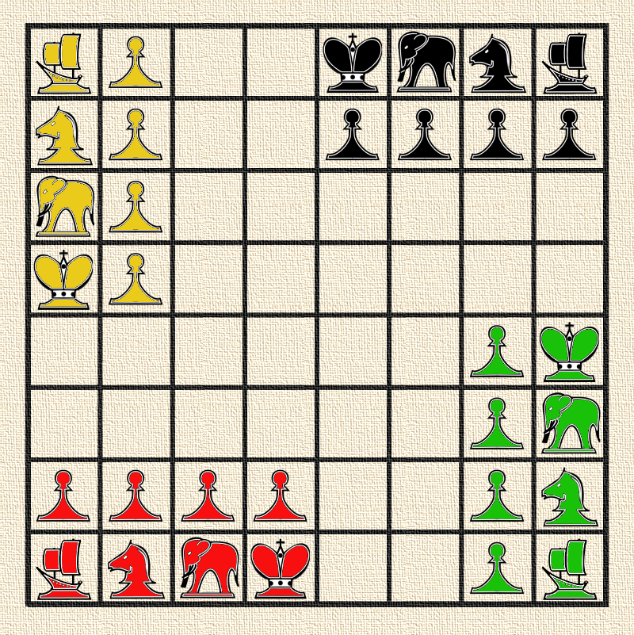

El origen del ajedrez se remonta a la antigua India a un juego llamado Chaturanga. Cuenta la tradición hindú que fue regalo de un sacerdote de alta casta, Brahman; a un soberano que sometía a su pueblo mediante vejaciones. Las piezas sobre el tablero del primigenio ajedrez, representaban el esquema social y de poder de la antigua India.
Un rey entristecido por la pérdida de su hijo en una batalla, no encontraba consuelo en ningún lado, o al menos eso pensaba hasta que un día un hindú se le acercó para presentarle un juego, el ajedrez. El rey paso un tiempo largo jugando con el hindú, pues el juego le pareció entretenido, así que le dijo que pidiese lo que quisiera como recompensa. El hindú no tardo en contestar, pidió que colocara 1 grano de trigo en la primera casilla, 2 granos en la segunda, 4 en la tercera, 8 en la cuarta y así sucesivamente. El rey creyó que habiendo solo 64 casillas en el tablero, la cantidad de granos de trigo cabrían sin problemas en un saco, sin embargo, si seguimos doblando la cantidad de granos de trigo hasta llegar a la casilla 64, nos encontraríamos con la cifra de 18 446 744 073 709 551 615 granos, una cantidad imposible de juntar incluso con toda la cosecha de India y del mundo entero. Sin dudas, una lección que el rey jamás olvidó.